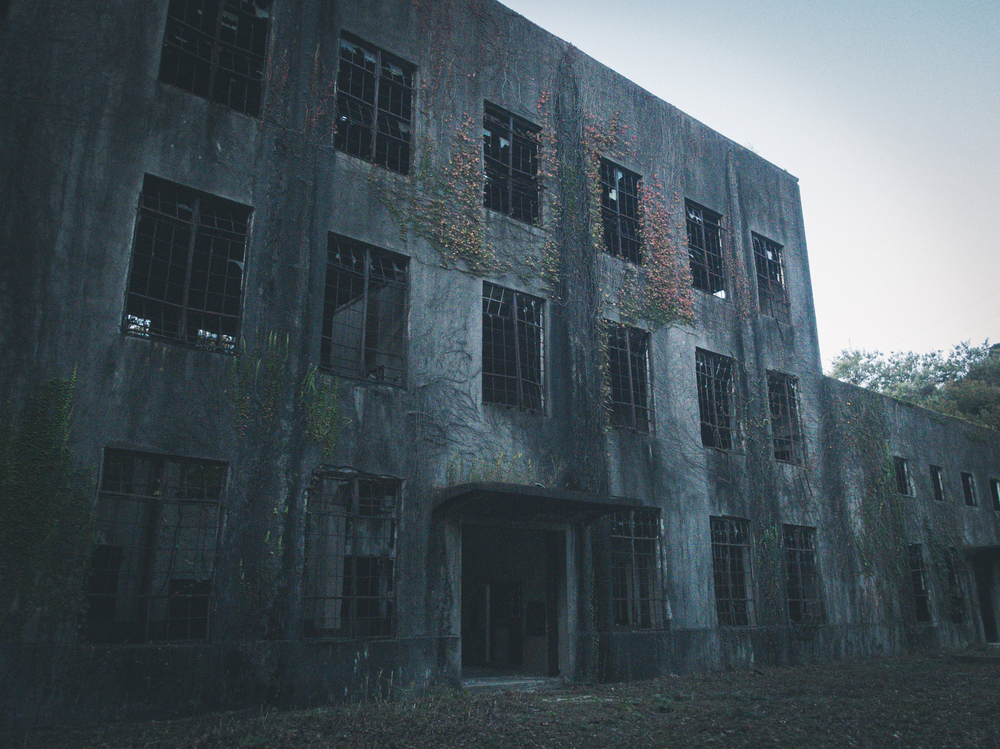

Story

- 誰もいない教室
- 出没場所: E701
概要:7月の蒸し暑い夕方。名城大学の理工学部棟は、講義が終わると同時に急速に静まり返っていた。

- 赤い泡
- 出没場所: 図書館3F女子トイレ
概要: 名城大学の図書館――重たい扉を押すと、すっと空気が冷たくなる。
- そらいろの夜に
- 出没場所: タワー75 そらいろラウンジ
概要: 名城大学のタワー棟最上階にあるレストラン「そらいろラウンジ」。

- 答案回収者
- 出没場所: 12号館裏
概要:名城大学の12号館裏――そこは普段学生が通ることも少なく、植え込みと古びた倉庫があるだけの寂しい場所だ。
昼間は何の変哲もない裏道。

- 藁人形の坂道
- 出没場所: N棟裏
概要: 名城大学・N棟の裏には、グラウンドへと続く細い坂道がある。
木々に囲まれて日が落ちると真っ暗になるその道を、学生たちは「あの坂、気持ち悪いよな」と噂していた。
- 白い階段の女
- 出没場所: 7,8号館
概要: 名城大学の7号館と8号館――
部活やサークルの部室が入る古びた建物で、放課後は練習の音や笑い声が絶えない。
- 絨毯の女
- 出没場所: タワー75 学長室
概要: 名城大学の本部棟――
その最上階には、重厚な扉に守られた学長室がある。

- 爪痕の席
- 出没場所: S棟171
概要: 名城大学S棟、3階の教室。
その窓際の最後列の席には、誰も座ろうとしない。